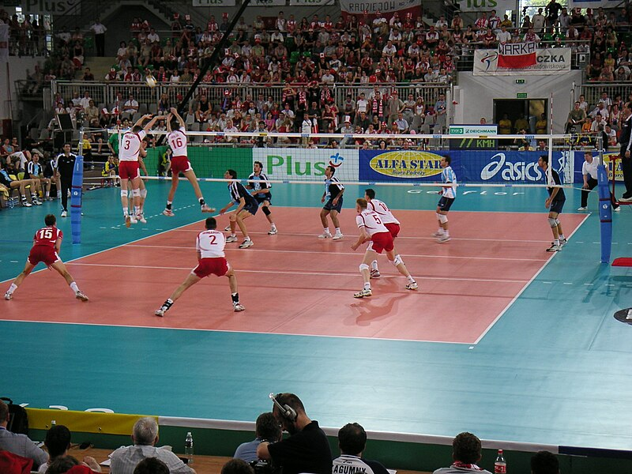

The game is usually played on a square board made of plywood, with a pocket in each corner. The International Carrom Federation says that the square playing surface must be between exactly 73.5 and 74 centimetres (28.9 and 29.1 )inalong each side, that the edges be bounded by bumpers of wood, and the underside of each pocket be covered by a net capable of holding at least 10 carrom pieces.

The recorded history of chess goes back at least to the emergence of a similar game, chaturanga, in seventh-century India. After its introduction in Persia, it spread to the Arab world and then to Europe. The rules of chess as they are known today emerged in Europe at the end of the 15th century, with standardization and universal acceptance by the end of the 19th century. Today, chess is one of the world's most popular games and is played by millions of people worldwide.

Volleyball is a team sport in which two teams of six players are separated by a net. Each team tries to score points by grounding a ball on the other team's court under organized rules. It has been a part of the official program of the Summer Olympic Games since Tokyo 1964.Beach volleyball was introduced to the programme at the Atlanta 1996 Summer Olympics. The adapted version of volleyball at the Summer Paralympic Games is sitting volleyball.
Modern kabaddi is a synthesis of the game played in various forms under different names in the Indian subcontinent. India has been first credited with having helped to popularise kabaddi as a competitive sport, with the first organized competitions occurring in the 1920s, their introduction to the programme of the Indian Olympic Games in 1938, the establishment of the All-India Kabaddi Federation in 1950, and it being played as a demonstration sport at the inaugural 1951 Asian Games in New Delhi. These developments helped to formalize the sport, which had traditionally been played on muddy surfaces in villages, for legitimate international competition